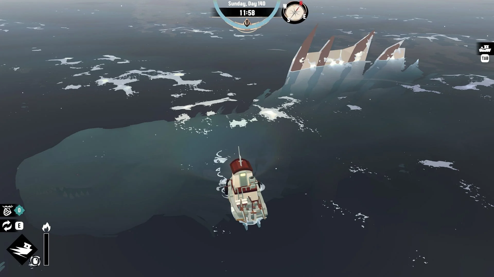
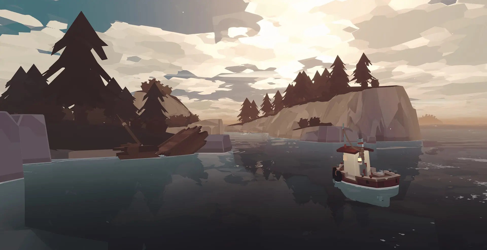

"Throw me back" to: SiteName.com
Beneath the waves
I didn’t know I needed a cosmic horror-fueled fishing game in my life – at least, not until I played Dredge. It’s not exactly a full-blown management sim ala Fishing Planet, but this 12-hour expedition through haunted open waters is both mysterious and compelling enough to tickle my brain and tug on all the right heartstrings. I felt possessed into flinging myself overboard with an unhinged smile cast across my lips, like one of its many macabre characters. …Figuratively speaking. Starting small and slow is a challenge, but upgrading my fishing boat led Dredge to spout forth a flurry of meaningful improvements to my fishing speed, inventory capacity, and my ability to scope out and evade the plethora of dangers that might rear their ugly heads at night.

All I know is that I’m a contract fisherman who’s rescued by the townsfolk of a remote island settlement called Greater Marrow. I’m given a new boat and… that’s all. But due to Dredge’s simple fishing and movement mechanics, this is pretty much all I need to know before I can begin my quest for fish on the open ocean, and it’s there that I’m immediately treated to a gorgeous sunrise stretching over the horizon.
It's all about control
Controlling your boat through tight spaces and navigating harsh waters is a breeze since moving forward and backward (and braking) is as simple as moving the left thumbstick back and forth. It’s an enjoyable added touch that progressing through each step of the main quest unlocks additional movement abilities, like the Haste skill that gives a speed boost that’s especially useful when getting out of the way of a hungry sea monster – but comes with the risk of destroying an engine and damaging your hull if you don’t give it intermittent rests.
Dark means danger
Dredge’s story is intentionally cryptic at first glance, with your ship’s bow providing minimal context to the series of events unraveling in front of your eyes. But what starts out as a relaxing fishing trip rapidly takes a darker turn through threatening encounters with the ocean’s natural and supernatural denizens – who turn hostile after dark.
When the fog rolls in, your panic meter begins to increase, so the higher it goes, the more likely it is that monsters and other obstacles will spawn. This means that you have to balance that against turning on lights to temporarily lower panic. Of course, light attracts monsters that will quickly destroy your boat’s hull if you don’t evade them, so it’s a bit more challenging to manage than a simple fishing game. That brings balance and danger to every expedition.
Adding even more challenge, the world shifts around at night, meaning I sometimes ended up running headfirst into a rock that definitely wasn’t there during the daytime. For this reason, it’s never a great idea to make a beeline for the nearest port of call when panic sets in. At least, not without making sure the next few feet in front of you are clear, which is made easier by upgrading your boat with bigger, brighter lights. This interaction between systems gives Dredge a layer of strategy that keeps things interesting even when I’m not making substantial progress on the main quest.
Launch Trailer by Nintendo Co.,Ltd.
Be carefull where you land
The tugboat is as fragile as it looks, meaning it takes only a few collisions – even small ones – to send you back to the dock from which you most recently set sail. Full disclosure: autosaves are frequent in Dredge, conveniently taking place whenever you bring your ship into any port. Plus, docks are scattered liberally across the world map, so it never feels like a safe haven is too far away to have a fair chance at evading danger. It’s great then that dropping anchor at a friendly settlement and sleeping through the night can eliminate your panic gauge so that you get a fresh start at the beginning of the following day. This allows me to fully appreciate moments of tension, since its difficulty always feels just balanced enough to provide a challenge and a handful of scares without ever crossing a line or feeling unfair.
Verdict
Dredge erupted out of the left field as 2023’s most unforgettably creepy fishing simulator. Without spoiling anything, its slow dive into Lovecraftian horror intermingles with subtle elements of seabound thrillers like Jaws and Moby Dick, and yet despite its twists, its fishing and sailing mechanics are simple enough to be relaxing – just as long as you don’t stay out past dark. Its colorful graphics, intelligent story, and seafaring sound design are alluring, but calling it a management sim betrays how simple and approachable it is.